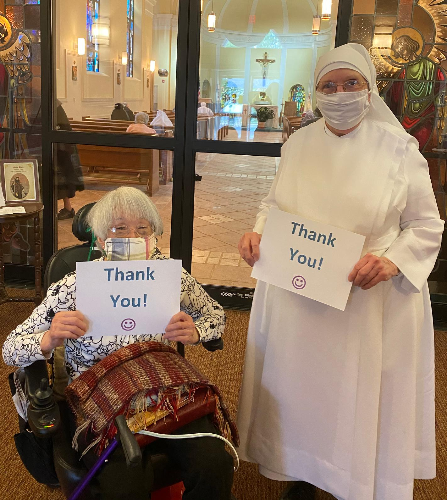

The Little Sisters of the Poor Nursing Home are looking to see if students would like to record individual (or group) videos of themselves singing/playing music that they could show to the residents. If you’re musically talented and can share your gift with the elderly, contact Katrina Ortiz at kmo69@pitt.edu for more details.
